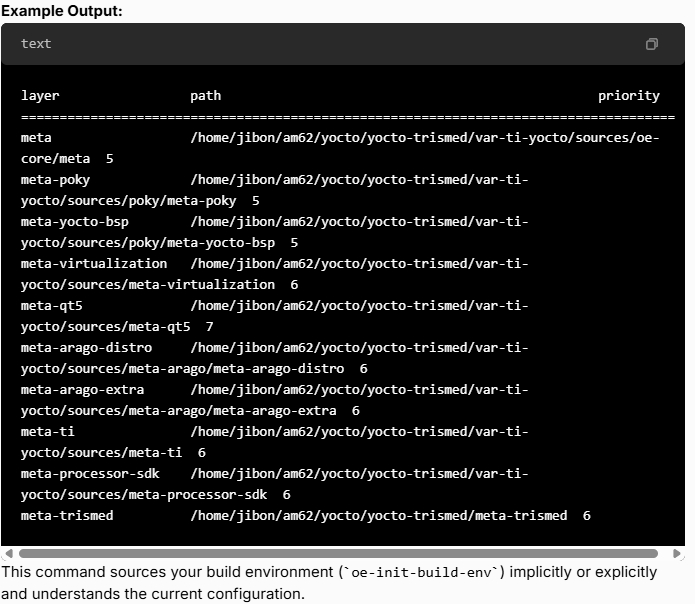

Yocto generally refers to a folder called poky as the main repository that contains the core metadata and tools for building embedded Linux distributions.
In our case for ti AM62 or var-am62
Using bitbake-layers show-layers (Recommended)
This command, run from your build directory (e.g., build), will display a well-formatted list of all layers that Bitbake knows about,
including their paths, priority, and potentially their Git revisions.
```bash
bitbake-layers show-layers
```
cd <your_build_directory> # e.g., cd build
bitbake-layers show-layers

Inspecting conf/bblayers.conf
cat <your_build_directory>/conf/bblayers.conf
Example Excerpt from bblayers.conf:
# LAYER_CONF_VERSION is increased each time if the layer's config format is changed
LCONF_VERSION = "7"
BBPATH = "${TOPDIR}"
BBFILES ?= ""
BBLAYERS ?= " \
/home/jibon/am62/yocto/yocto-trismed/var-ti-yocto/sources/poky/meta \
/home/jibon/am62/yocto/yocto-trismed/var-ti-yocto/sources/poky/meta-poky \
/home/jibon/am62/yocto/yocto-trismed/var-ti-yocto/sources/poky/meta-yocto-bsp \
/home/jibon/am62/yocto/yocto-trismed/var-ti-yocto/sources/meta-virtualization \
/home/jibon/am62/yocto/yocto-trismed/var-ti-yocto/sources/meta-qt5 \
/home/jibon/am62/yocto/yocto-trismed/var-ti-yocto/sources/meta-arago/meta-arago-distro \
/home/jibon/am62/yocto/yocto-trismed/var-ti-yocto/sources/meta-arago/meta-arago-extra \
/home/jibon/am62/yocto/yocto-trismed/var-ti-yocto/sources/meta-ti \
/home/jibon/am62/yocto/yocto-trismed/var-ti-yocto/sources/meta-processor-sdk \
/home/jibon/am62/yocto/yocto-trismed/meta-trismed \
"